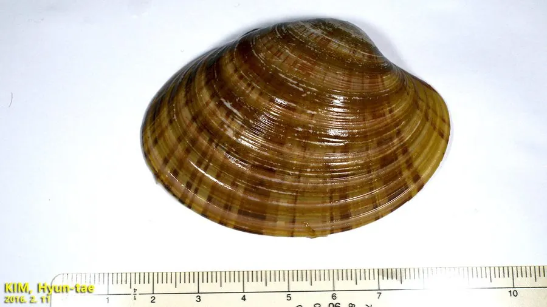

软体动物 · 动物界
中国仙女蛤 Callista chinensis

壳面光滑、带淡紫色晕的大型蛤蜊，生活在沙质海底，中国东南沿海常见，肉味鲜美，可食用也可作观赏。
- 分类
- 门软体动物门纲双壳纲目帘蛤目科帘蛤科属仙女蛤属
- 栖息环境
- 潮间带下区至水深数十米的沙质和沙泥质海底
- 地理分布
- 西北太平洋，包括中国东南沿海、日本南部、菲律宾和越南
- 保护级别
- 尚无保护级别；资源受底拖网和采捕影响
物种志
中国仙女蛤的贝壳呈长卵圆形，壳长约六至九厘米，壳质较厚，两壳扁平，壳面光滑，呈黄白至浅褐色，带淡紫色或粉色的晕，有细密的同心生长纹，壳顶稍突出，壳缘光滑，壳内面白色，铰合部有主齿。足部侧扁，水管较长，末端有触手。它靠足部在沙中掘穴，滤食时把水管伸出沙面。壳面光滑，色泽柔和，仙女蛤之名由此而来。
它分布于西北太平洋，包括中国东南沿海、日本南部、菲律宾和越南，栖息在潮间带下区至水深数十米的沙质和沙泥质海底，喜欢水质清澈、水流平缓的沙底。它以硅藻和有机碎屑为食，靠水管滤食，生长较慢。繁殖期在春夏，雌雄异体，幼虫经浮游阶段后附着到沙底。中国仙女蛤肉味鲜美，是东南沿海常见的食用贝类，壳形美观、色泽柔和，也常被收藏作观赏贝壳。目前尚无保护级别，资源受底拖网和采捕影响。
形态与习性
- 食性滤食硅藻和有机碎屑
- 壳长约六至九厘米，壳形长卵圆
- 壳色黄白底带淡紫色或粉色晕
- 栖息深度潮间带下区至水深数十米的沙底
- 繁殖春夏繁殖，幼虫经浮游期后附着沙底
- 利用肉可食，壳可作观赏贝壳收藏
趣味知识
- 中国仙女蛤的壳面带着淡淡的紫粉色晕，像涂了一层薄胭脂。
- 它生活在清澈的沙底，壳面光滑，不易附着藻类和泥沙。
- 这种蛤在东南沿海市场上常被当作高档贝类出售，壳也常被收藏。